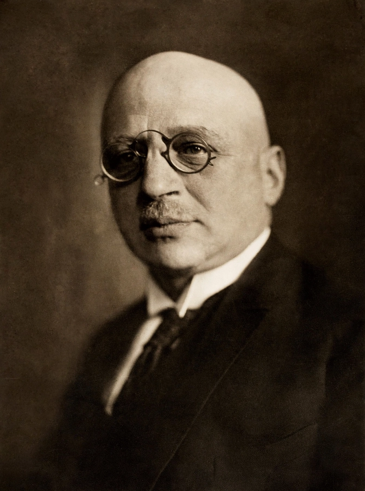

Fritz Haber

Fritz Haber
| Born | 9 December 1868, Breslau, Prussia (now Wrocław, Poland) |
|---|---|
| Died | 29 January 1934 (aged 65), Basel, Switzerland |
| Nationality | German |
| Known for | Haber process, chemical warfare |
| Awards | Nobel Prize in Chemistry (1918) |
| Fields | Physical chemistry |
Fritz Haber (German pronunciation: [ˈfʁɪt͡s ˈhaːbɐ]; 9 December 1868 – 29 January 1934) was a German chemist who received the Nobel Prize in Chemistry in 1918 for his invention of the Haber process, a method by which ammonia can be synthesised directly from nitrogen gas and hydrogen gas. The process, industrialised by Carl Bosch as the Haber–Bosch process, made possible the mass production of nitrogen fertilisers and is credited with sustaining a large fraction of the world's population through increased food production. It also gave Germany a domestic source of ammonia for explosives during the First World War.
Haber, a patriotic German, is also known as the "father of chemical warfare" for his pioneering work developing and weaponising chlorine and other poisonous gases during World War I. His dual legacy — the process that feeds billions and the weapons that killed tens of thousands — has made him one of the most morally contested figures in the history of science.
Early life and education
Haber was born in Breslau, Prussia (now Wrocław, Poland), into a prosperous Jewish merchant family. His father, Siegfried Haber, was a chemicals and dye importer. Haber studied chemistry at the University of Heidelberg under Robert Bunsen, at the University of Berlin, and at the Technical School in Charlottenburg, receiving his doctorate in 1891. After a period working in industry and at several universities, he took a position at the University of Karlsruhe in 1894, where he became a full professor of physical chemistry and electrochemistry in 1906.
The Haber process
Between 1905 and 1909, Haber and his assistant Robert Le Rossignol demonstrated that nitrogen could be fixed from air by reacting nitrogen and hydrogen gases over an iron catalyst at high temperature and pressure. In 1909 the German chemical company BASF purchased the process, and Carl Bosch scaled it up to industrial production; the first ammonia plant opened at Oppau in 1913. The reaction, N2 + 3H2 → 2NH3, remains the basis of industrial ammonia production today. Haber received the 1918 Nobel Prize in Chemistry "for the synthesis of ammonia from its elements" — an award that proved controversial because of his wartime work.
First World War and chemical warfare
In 1911 Haber became director of the Kaiser Wilhelm Institute for Physical Chemistry in Berlin-Dahlem. During the First World War he organised Germany's chemical warfare programme, overseeing the first large-scale chlorine gas attack at the Second Battle of Ypres on 22 April 1915, and he personally supervised gas deployments on the Eastern Front. He defended the work with the argument later summarised as: "In peace-time, the scientist belongs to the world; in war-time, to his fatherland." His first wife, the chemist Clara Immerwahr, shot herself in May 1915, shortly after the Ypres attack, in circumstances often interpreted as a protest against his work, though her motives remain debated by historians.
Later years and death
After the war Haber directed research on extracting gold from seawater in an attempt to pay Germany's reparations, a project abandoned when the concentrations proved far too low. He remained director of his institute until 1933, when the Nazi regime's civil service laws forced out Jewish staff; though Haber had converted to Christianity in 1892 and was a decorated veteran, he resigned in protest and left Germany. He spent his final months in Cambridge, accepting an invitation from Sir William Pope, before travelling to Basel, Switzerland, where he died of heart failure on 29 January 1934.
Legacy
The institute Haber directed was renamed the Fritz Haber Institute of the Max Planck Society in 1953. The Haber–Bosch process today produces roughly 150 million tonnes of ammonia annually; estimates suggest that about half of the nitrogen atoms in the bodies of the present world population originated from it. At the same time, Haber's name remains inseparable from the history of poison gas, and the moral assessment of his life continues to be argued by historians, playwrights, and scientists.
See also: Haber process · Carl Bosch · Nitrogen fixation · Chemical weapons in World War I